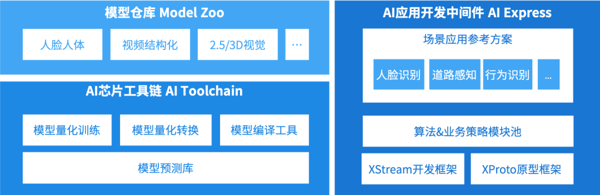
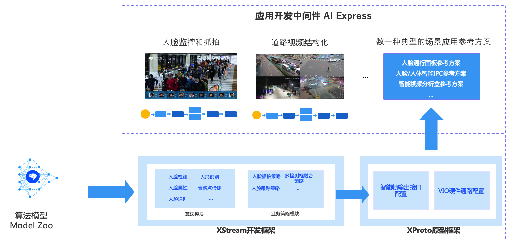
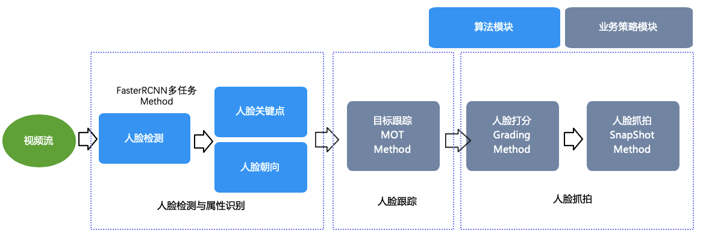
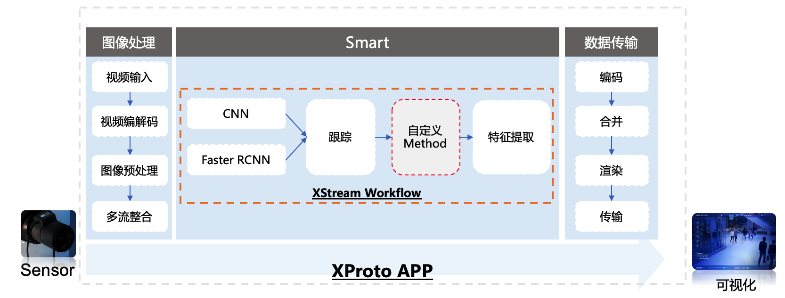

概述¶
本文介绍AI Express基本概念和功能，并从定位与优势角度来讲解AI Express对芯片应用开发过程中的价值点。
AI Express简介¶
AI Express，中文名称AI应用开发中间件，是地平线芯片“天工开物”（Horizon OpenExplorer™️ Platform）AI开发平台的一部分。
整个AI开发平台基于地平线AI芯片打造，由模型仓库(Model Zoo)、AI芯片工具链(AI ToolChain)及AI应用开发中间件(AI Express)三大功能模块构成，旨在通过全面降低开发者门槛、提升开发速度、保证开发质量，赋能产业智慧升级。
完整的Open Explore架构图如图所示：

AI芯片工具链（AI Toolchain）：覆盖了从算法模型训练、优化和转换和部署到芯片运行模型预测的完整AI开发过程，包含模型结构检查器、性能分析器、模型编译器、模型模拟器在内的全套工具。在与AI芯片架构的深度耦合下，能够带来性能的显著提升。
模型仓库（Model Zoo）：地平线“天工开物”模型仓库（Model Zoo）开放了三类算法，即产品算法、基础算法和参考算法，充分响应不同合作伙伴的需求。其中涉及人脸、人体、人非车等多种类别，具备极高的算法质量和精度，可有效避免合作伙伴“重复发明轮子”，大幅节省算法训练和开发的时间与成本。
AI应用开发中间件（AI Express）:包含XStream和XProto两套应用开发框架，并且内置丰富且高度可复用的算法模块、业务策略模块、应用组件，帮助合作伙伴快速搭建高性能的算法工作流。如同搭积木一样，合作伙伴可灵活组合产品算法，高效组成适用于各类应用场景的算法解决方案，全面降低边缘AI应用的开发门槛。
完整AI Express功能如图所示：

它整体由XStream开发框架，XProto原型框架，内置参考解决方案三部分组成，覆盖算法模型集成和场景应用APP开发的全流程。
XStream开发框架¶
XStream属于一套算法SDK编程框架，Method为框架核心组件，目前支持算法Method和策略Method两种。
算法Method：与算法模型仓库Model Zoo打通，支持将算法模型封装为算法Method模块，明确Method输入输出，前后处理。支持通过算法Method来实现模型复用，提供复用效率。
策略Method: 基于Method接口来实现策略模块的规范化交付，提高策略模块的跨项目复用能力。
XStream内置了大量可复用的算法Method和策略Method，同时也开放Method实现接口，支持客户自定义各种算法和策略Method。
针对这些Method，XStream提供流程配置功能，支持将各种Method按照业务需求组装成一个个Workflow有向图，并通过XStream内置的数据驱动的调度策略，高效完成Workflow的运行和调度，最大限度的利用地平线芯片BPU的计算资源。
下图是基于XStream开发框架构建的人脸抓拍智能算法SDK示例：

它由XStream内置的四个算法Method组成：FasterRCNNMethod,MOTMethod,GradingMethod和SnapShotMethod，整个workflow支持对视频图片帧进行人脸框，人脸关键点，人脸姿态检测，并对检测到人进行跟踪，打分与抓拍。
关于人脸抓拍的效果演示，详细参见快速上手章节
XProto原型框架¶
XStream聚集算法模型、策略的集成以及最终业务Workflow/SDK生成。而XProto是在XStream基础上，为基于XStream构建算法SDK提供APP的运行环境。它支持快速将XStream Workflow封装成可运行的APP，进行运行在地平线边缘芯片中。
下图是XProto APP基本架构图：

它内置了数据输入输出等应用Plugin组件以及SmartPlugin应用组件，通过内部数据流搭建，实现图像数据的输入，编解码，图像预测，智能结构化以及到可视化的多阶段处理，完成智能应用的快速交付。
同时我们开放了XProto应用组件Plugin接口，支持用户对XProto框架进行扩展。
场景参考解决方案¶
基于XStream和XProto两套框架，我们也将经过地平线各种量产考验的场景解决方案进行开放，这些解决方案通过搭配地平线芯片以及一些96board，面板机，IPC等硬件参考设计，可以实现快速场景应用的落地。
定位与优势¶
AI Express核心价值旨在加速客户从业务模型集成到应用程序的整个开发流程，规避嵌入式AI应用研发过程中常见问题，提高客户交付效率。
基于AI Express来构建智能应用，你可以获得如下收益：
提高算法模型复用能力：算法模型本身是一个参数和配置文件，在缺乏前后处理等代码加工情况下，无法高效复用。而XStream框架支持将算法模型封装为算法Method，可以快速对Method进行算法集成，验证和交付。
提高算法模型交付效率：XStream内置常用检测，跟踪,属性识别等算法Method，适配同构算法模型。比如内置FasterRCNNMethod支持适配人脸检测，猫脸检测等，直接替换模型既可以快速进行集成和测试，提高算法人员以及工程人员交付效率。
提高策略模块复用能力：通过XStream框架式编程方式来约束策略模块实现方式，避免因为策略多样化需求以及多样性实现方式导致策略复用率低的问题。
简单灵活的流程式开发：基于两套开发框架以及内置场景解决方案，我们可以快速应付各种场景化需求，进行灵活任务流编排，实现AI应用开发。比如COVID-19疫情期间，针对口罩和温度识别需求，可以提高数倍的终端产品交付效率。
高效的AI应用执行效率：对于复杂workflow数据流，XStream内部的数据驱动调度方案可以自动解析Method之间的依赖关系，最大程度并行化执行，进而高效利用地平线BPU芯片的计算能力，减小处理延迟。
AI Express为了让客户更好的去达成这些收益，我们还做以下事情：
源码级交付：我们将AI Express整套框架进行源码级别开放给客户，灵活支持客户对这个框架功能进行自主迭代。
产品级交付：在框架内部，我们对核心功能实现90%以上测试用例覆盖程度，并经过多家客户实际场景落地，达到产品级别交付质量的要求。
持续化技术支持：在地平线开发者论坛社区中，围绕AI Express我们提供技术讨论区，地平线一线技术人员持续为客户提供及时的技术支持。